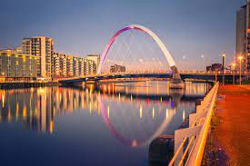

Glasgow is a port city on the River Clyde in Scotland's western Lowlands. It's famed for its Victorian and art nouveau architecture, a rich legacy of the city's 18th 20th-century prosperity due to trade and shipbuilding.
Click me
University of Glasgow
The University of Glasgow is located in the west end of Glasgow which offers 48 different courses.
Traditional Foods
- Haggis served with neeps and tatties
- Scottish salmon
- Delicious roasted grouse
- A hearty Cullen Skink